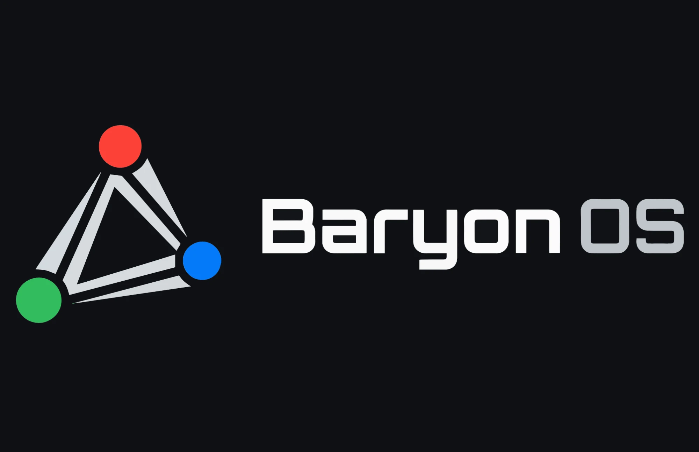

Typeface

BaryonOS
RegularMediumSemiboldBold
09:41vrijdag 13 november
Thuis-NAS bijgewerkt
12 bestanden staan versleuteld op Thuis-NAS.
Vraag van het systeem · getoond boven alle apps
Webvenster wil Tuinplan versturen naar tuinplanner.example
- App
- Webvenster
- Wat
- Tuinplan (1 notitie, 2,1 kB)
- Waarheen
- tuinplanner.example
- Hoe lang
- Alleen deze keer
tuin
Bestanden
TuinplanNotitie · vandaag 09:12
Zaaikalender 2027Tabel · do 5 nov
Instellingen
Achtergrond kiezenWeergave
Assistent op dit apparaat
Vraag de assistent over “tuin”Zonder internet
Bestanden › Documenten › Verhuizing
| Naam | Gewijzigd | Grootte | Opslag |
|---|---|---|---|
| Plattegrond nieuwe woning | gisteren 16:30 | 1,8 MB | Op dit apparaat en Thuis-NAS |
| Begroting verbouwing | vandaag 09:30 | 48,6 kB | Wordt bijgewerkt… |
| Huurcontract Spoorstraat 12 | ma 2 nov | 312 kB | Op Thuis-NAS · versleuteld |
| Offerte keuken 0118-B | 01-11-2026 | 96,0 kB | Op dit apparaat |
/Gebruikers/noor/Documenten/Verhuizing/Begroting verbouwing.tabel
Thuis-NAS is niet bereikbaar. Je werk staat veilig op dit apparaat en wordt bijgewerkt zodra de NAS terug is. Apps krijgen alleen toegang waar je zelf toestemming voor geeft; installeren geeft geen toegang tot je bestanden, netwerk of locatie.
Home NAS is unreachable. Your work is safe on this device and syncs as soon as the NAS is back. Größe, Ålesund, Łódź, Șiret, IJsselmeer, IJsselmeer.
Instellingen › Privacy en beveiliging
Zoeken op internet
Uit: zoekopdrachten blijven op dit apparaat.
Minder beweging
Vervangt animaties door korte overgangen.
Locatie voor Sterrenkaart
Niet beschikbaar: app niet geïnstalleerd
Thuis-NAS_01
Gebruik alleen letters, cijfers en een streepje.
Il1| O0o rn m cl d 6 8 5 S B 8 ij IJ
€ 1.234,56 · 13-11-2026 09:41:07 · 100 %
€ 1.234,56 · 13-11-2026 09:41:07 · 100 %
SMP:LOCKDEP:ORDER · build c76daf7b · 0x7F3A · v0.9.3 · 192.168.1.20